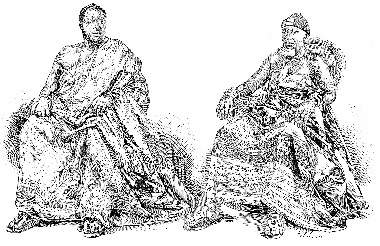
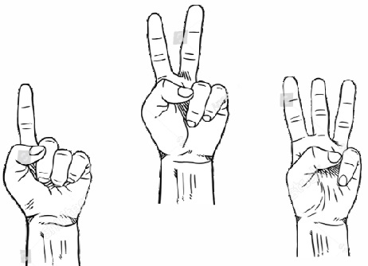

She was afraid to take her child to the king's palace. She really knows that whenever the King gives an order, he has always stood on it. In fact, he hadn't joked with it; anything he says is what would immediately happen.
And nobody in that town has the courage to question him. But his wives do. However, the King now calls for everyone in that area to come and witness the scene and asked the bell ringer to tell the villagers to gather. Meanwhile, Temiogbe overheard all of their discussion.
She ran quickly and call for her mother and her step mother, herewith, she informed them of what she had from her father. Immediately they heard it, they felt chary.
Meanwhile
the second wife Asake went inside the King's palace and asked the King if what she heard was true-the King deduced when he saw Asake; but later, King Adeyomi replied her and said “That's my final say!” I'm sorry my dear love!!
Instantly, Asake fainted, after some minutes, Bimpe came in and met her laid down on the ground thinking that she was begging the King for reconsideration.
Temiogbe was inside her room weeping seriously. The Priests, the Chiefs Priests, the Herbalist, the Chiefs Herbalist and all the entire Chiefs of Royal Kings were around the corner of the palace waiting for the King to come out and face their judgement. “One of the Chief stood up and went inside the room of the King and informed him that all the villagers, and Odesanmi family are outside waiting for you!” the king passively ignored his lives at the spot and went outside.
Thereafter, He came out and says if Odesanmi's son would list out the name of the three masquerades, he will go inside his powerful room and never return back.
But before He did that; He declared again to the elders that are on sit.

Hence if Mubo could list out the names, “Odesanmi's generation shall have inheritance to “Kingship”. He sent forth for Mubo, here he comes; he greeted all the people with harmony.
He praises his mother, but Aderonke was so depreciative. He further and consulted the masquerade from the beginning to the ends.
Nonetheless, after he finished saying, he mentioned the first masquerade “Temiyemi”; meaning: (I understand my policies). He mentioned the second masquerade “Temitomiro”; meaning: (My own case is enough for me to think. )

Lastly, He mentioned the third masquerade with a loud voice. “Obinrinosefininurun”; meaning: (Woman is not meant to be privy). Suddenly, the surface of the cloud change and thunder started caressing.
Her mother was gee. The audience weren't sure, but there were amused!! Immediately the King went inside and never returned. The elders and the chiefs now asked the guards to released Feyin.
That was how Odesanmi's families became a member of Kingship in that town.